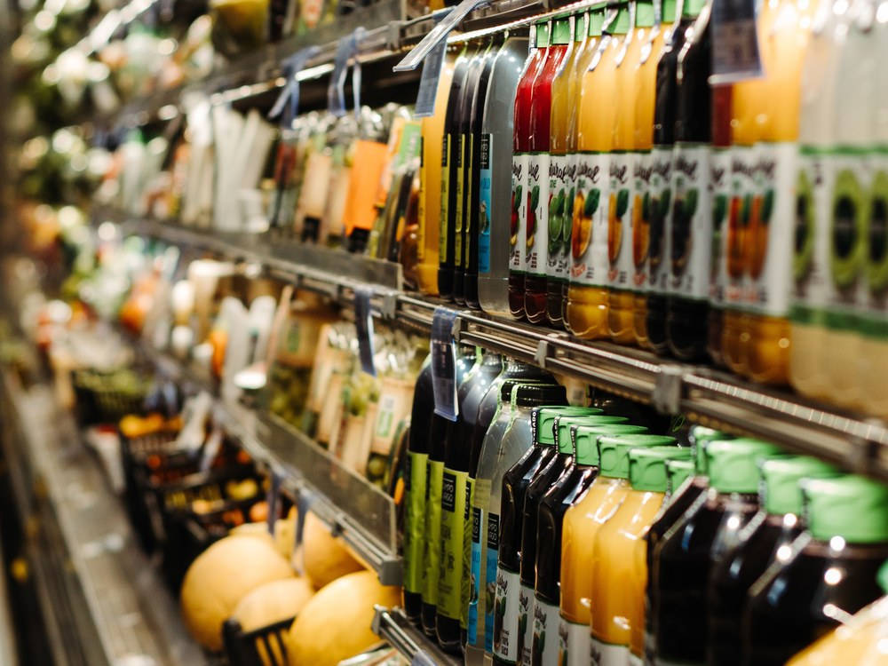

Industriels, distributeurs ou marques : nous mobilisons la bonne filière, le bon niveau de transformation et le bon format pour construire une réponse adaptée à votre marché.
Origine, spécifications, niveau de transformation, certification, conditionnement et logistique : nous adaptons chaque projet aux contraintes réelles de nos clients. Notre stock européen à Anvers nous permet également de proposer davantage de disponibilité et de réactivité sur certaines références.
De la matière première au produit fini, choisissez jusqu'où nous vous accompagnons.
Sur les ingrédients naturels, le prix ne suffit pas. La qualité doit être constante, l'origine documentée, les volumes sécurisés et la matière simple à intégrer dans vos opérations.
Une chaîne d'approvisionnement structurée, de l'origine au produit livré.
Demander un échantillon
Pour un distributeur ou un grossiste, une bonne offre doit conjuguer compétitivité, différenciation et fiabilité d'approvisionnement. L'origine et la solidité de la filière deviennent alors de vrais leviers de valeur.
Notre rôle : relier la bonne filière au bon produit, pour construire une offre cohérente avec votre marché.
Construire votre gammeEn cosmétique, une matière ne se choisit pas uniquement sur ses spécifications. Son origine, ses propriétés, sa traçabilité et la qualité de sa documentation participent également à la valeur du produit fini et à la cohérence de la marque.
Une matière choisie pour son origine, ses propriétés et ce qu'elle peut apporter à votre produit.
Demander un échantillonDévelopper un produit sous votre marque implique de coordonner matière première, transformation ou formulation, conditionnement, conformité et mise sur le marché. Notre rôle est de réunir ces expertises autour d'une filière et d'un projet cohérents.
Votre marque. Notre filière. Un produit construit ensemble. Nous apportons la matière et la maîtrise de l'origine, puis mobilisons les partenaires nécessaires jusqu'au niveau de transformation et de conditionnement attendu.
Lancer votre projet en marque blancheVotre projet demande une matière que nous ne proposons pas encore, ou une origine spécifique. Vous cherchez un partenaire capable d'aller la chercher avec les mêmes exigences que sur ses filières en propre.
Nous ne promettons pas ce que nous ne maîtrisons pas : nous construisons la filière qui répond à votre besoin.
Nous consulterNous partons de votre besoin pour identifier la matière, l'origine, le niveau de transformation, le format et l'organisation logistique les plus adaptés.
La filière reste notre point de départ. Votre marché détermine la solution.
Décrivez-nous votre besoin, vos volumes, vos contraintes et votre marché. Nous construirons avec vous la réponse la plus adaptée.
Nous contacter